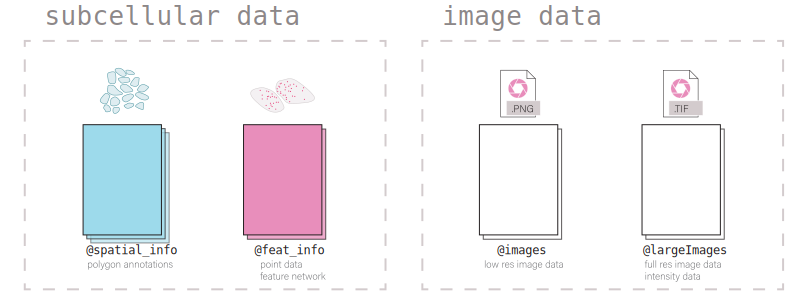

Giotto is a technique-agnostic framework and toolbox for spatial-omic analysis. Its structure and classes are designed to be flexible, intuitive, and readable. The framework supports working with both aggregate (cell x count) and un-aggregated spatial data where the polygon annotations are separate from the spatial expression data.
1. Giotto Object Structure
Usage of the Giotto package revolves around the giotto object. This is an S4 class that holds spatial expression data and facilitates its manipulation and visualization with the Giotto package’s functions. Additional metadata and other outputs generated from certain functions, which may be used in downstream analyses, are also be stored within the giotto object. Its self-contained nature provides a convenient representation of the entire spatial experiment and is why most Giotto functions take a given giotto object as input and return a giotto object as output.
Data is organized within the giotto object in defined slots as described in the diagram below.

2. Nested Organization of the Giotto Object
Biology happens across multiple scales of size and types of modalities. While it is possible to simply generate a new object for each combination of the two, the fact that data from most spatial methods are both high resolution and spatially contiguous, requires a more flexible approach that permits the coexistence of multiple spatial units within the same object. This allows the user to define the spatial unit(s) of biology that are most relevant to the analysis and re-aggregate the feature information to those units.
With this organization it is convenient to compare expression across different spatial units. Additionally, by determining spatial overlaps between these spatial units, it becomes possible to represent the hierarchical organization of biological subunits and make queries using it.
2.1 Spatial unit and feature type
To accommodate this complexity, information is subnested within many of the giotto object’s slots first by spat_unit (spatial unit) and then by feat_type (feature type). This structurally separates each set of information within Giotto’s framework so that there is minimal ambiguity.
A summary of what information the object contains can be viewed by directly returning it.
library(Giotto)
library(GiottoData)
library(data.table)
vizmini = loadGiottoMini('vizgen')
vizmini An object of class giotto
>Active spat_unit: z0
>Active feat_type: rna
[SUBCELLULAR INFO]
polygons : z0 z1 aggregate
features : rna
[AGGREGATE INFO]
expression -----------------------
[z0][rna] raw
[z1][rna] raw
[aggregate][rna] raw normalized scaled pearson
spatial locations ----------------
[z0] raw
[z1] raw
[aggregate] raw
spatial networks -----------------
[aggregate] Delaunay_network kNN_network
spatial enrichments --------------
[aggregate][rna] cluster_metagene
dim reduction --------------------
[aggregate][rna] pca umap tsne
nearest neighbor networks --------
[aggregate][rna] sNN.pca
attached images ------------------
giottoLargeImage : 4 items...
Use objHistory() to see steps and params usedIncluded below is a description of the giotto object subnesting for each data slot and also the accessor functions for setting and getting information from them.
| Slot | Nested | Example | Internal Accessors |
|---|---|---|---|
| @expression | spat_unit - | getExpression() | |
| feat_type - | cell - rna - raw | setExpression() | |
| name | |||
| ————————— | ———————— | ———————————- | ————————- |
| @cell_metadata | spat_unit - | cell - rna | getCellMetadata() |
| feat_type | setCellMetadata() | ||
| ————————— | ———————— | ———————————- | ————————- |
| @feat_metadata | spat_unit - | cell - rna | getFeatMetadata() |
| feat_type | setFeatMetadata() | ||
| ————————— | ———————— | ———————————- | ————————- |
| @spatial_grid | spat_unit - | grid- grid | getSpatialGrid() |
| name | setSpatialGrid() | ||
| ————————— | ———————— | ———————————- | ————————- |
| @dimension_reduction | approach - | ||
| spat_unit - | getDimReduction() | ||
| feat_type - | cells - cell - rna - pca - pca | setDimReduction() | |
| method - | |||
| name | |||
| ————————— | ———————— | ———————————- | ————————- |
| @multiomics | spat_unit - | ||
| feat_type - | cell - rna-protein - WNN - theta_weighted_matrix | getMultiomics() | |
| method - | setMultiomics() | ||
| name | |||
| ————————— | ———————— | ———————————- | ————————- |
| @nn_network | spat_unit- | getNearestNetwork() | |
| method - | cell - sNN - sNN_results1 | setNearestNetwork() | |
| name | |||
| ————————— | ———————— | ———————————- | ————————- |
| @spatial_enrichment | spat_unit - | getSpatialEnrichment() | |
| feat_type - | cell - rna - results1 | setSpatialEnrichment() | |
| name | |||
| ————————— | ———————— | ———————————- | ————————- |
| @spatial_info | spat_unit | cell | getPolygonInfo() |
| setPolygonInfo() | |||
| ————————— | ———————— | ———————————- | ————————- |
| @spatial_locs | spat_unit - | cell - raw | getSpatialLocations() |
| name | setSpatialLocations() | ||
| ————————— | ———————— | ———————————- | ————————- |
| @spatial_network | spat_unit - | cell - Delaunay_network1 | getSpatialNetwork() |
| name | setSpatialNetwork() | ||
| ————————— | ———————— | ———————————- | ————————- |
| @feat_info | feat_type | rna | getFeatureInfo() |
| setFeatureInfo() | |||
| ————————— | ———————— | ———————————- | ————————- |
| @images | name | image | getGiottoImage() |
| setGiottoImage() | |||
| ————————— | ———————— | ———————————- | ————————- |
| @largeImages | name | image | getGiottoImage() |
| setGiottoImage() | |||
| ————————— | ———————— | ———————————- | ————————- |
| @instructions | instructions() | ||
| ————————— | ———————— | ———————————- | ————————- |
2.2 Show and list functions
Show and list functions are also provided for determining what information exists within each of these slots and its nesting.
-
showfunctions print a preview of all the data within the slot, but do not return information
showGiottoSpatLocs(vizmini) ├──Spatial unit "z0"
│ └──S4 spatLocsObj "raw" coordinates: (498 rows)
│ An object of class spatLocsObj
│ provenance: z0
│ ------------------------
│ sdimx sdimy cell_ID
│ 1: 6405.067 -4780.499 40951783403982682273285375368232495429
│ 2: 6426.020 -4972.519 240649020551054330404932383065726870513
│ 3: 6428.456 -4799.158 274176126496863898679934791272921588227
│ 4: 6408.155 -4816.583 323754550002953984063006506310071917306
│
│ ranges:
│ sdimx sdimy
│ [1,] 6402.438 -5146.726
│ [2,] 6899.203 -4700.157
│
│
│
├──Spatial unit "z1"
│ └──S4 spatLocsObj "raw" coordinates: (504 rows)
│ An object of class spatLocsObj
│ provenance: z1
│ ------------------------
│ sdimx sdimy cell_ID
│ 1: 6404.014 -4779.625 40951783403982682273285375368232495429
│ 2: 6408.296 -4970.794 17685062374745280598492217386845129350
│ 3: 6401.148 -4991.061 223553142498364321238189328942498473503
│ 4: 6430.153 -4971.251 240649020551054330404932383065726870513
│
│ ranges:
│ sdimx sdimy
│ [1,] 6401.148 -5147.193
│ [2,] 6899.323 -4700.410
│
│
│
└──Spatial unit "aggregate"
└──S4 spatLocsObj "raw" coordinates: (461 rows)
An object of class spatLocsObj
provenance: z0 z1
------------------------
sdimx sdimy cell_ID
1: 6637.881 -5140.465 100210519278873141813371229408401071444
2: 6471.978 -4883.541 101161259912191124732236989250178928032
3: 6801.610 -4968.685 101488859781016188084173008420811094152
4: 6789.055 -5105.338 101523780333017320796881555775415156847
ranges:
sdimx sdimy
[1,] 6401.412 -5146.747
[2,] 6899.108 -4700.326
- `list` functions are (internal) functions that return a `data.table`
of the available information and nesting.
Giottolist_expression(vizmini) spat_unit feat_type name
1: z0 rna raw
2: z1 rna raw
3: aggregate rna raw
4: aggregate rna normalized
5: aggregate rna scaled
6: aggregate rna pearson
# Find specific spat_unit objects #
Giottolist_expression(vizmini, spat_unit = 'z0') spat_unit feat_type name
1: z0 rna raw-
list names(internal) functions return avectorof object names at the specified nesting
Giottolist_expression_names(vizmini, spat_unit = 'z1', feat_type = 'rna')2.3 Provenance
Going further, sometimes different sources of information can be used when aggregating to a particular spatial unit. This is most easily shown with the subcellular datasets from the Vizgen MERSCOPE platform which provide both feature polygon information for multiple confocal planes within a tissue. The aggregated information produced then could be drawn from different z-planes or combinations thereof. Giotto tracks this provenance information for each set of aggregated data.
expr_mat = getExpression(vizmini, spat_unit = 'aggregate')
prov(expr_mat) [1] "z0" "z1"3. Giotto subobjects
Giotto 3.0 update introduced S4 subobjects that are used within the giotto object and its processing. These subobjects provide more formalized definitions for what information and formatting is needed in each of the giotto object slots in order for it to be functional. These objects are standalone and extensible and commonly used spatial manipulation and plotting methods are being implemented for them.
In addition, these subobjects carry several pieces of metadata in additional slots alongside the main information (e.g. also slots for spat_unit and feat_type alongside the exprDT slot for the exprObj S4). This makes it so that nesting information is retained when they are taken out of the giotto object and that nesting information does not need to be supplied anymore when interacting with the setter functions.
getter functions now have an output param that defaults to extracting the information from the giotto object as the S4 subobject. When extracting information that will be modified and then returned to the giotto object, it is preferred that the information is extracted as the S4 both so that tagged information is not lost, and because it is convenient to work with the S4’s main data slot through the [ and [<- generics (see Section 3.5).
3.1 Creating an S4 subobject
3.1.1 Constructors
For directly creating a subobject, constructor functions can be used.
constructors
createExprObj() createCellMetaObj() createFeatMetaObj() createDimObj() createNearestNetObj() createSpatLocsObj() createSpatNetObj() createSpatEnrObj() createSpatialGrid() createGiottoPoints() createGiottoPolygonsFromDfr() createGiottoPolygonsFromMask() createGiottoImage() createGiottoLargeImage()
coords = data.table(
sdimx = c(1,2,3),
sdimy = c(1,2,3),
cell_ID = c('A','B','C')
)
st = createSpatLocsObj(name = 'test',
spat_unit = 'cell',
coordinates = coords,
provenance = 'cell')There are non numeric or integer columns for the spatial location input at column position(s): 3 The first non-numeric column will be considered as a cell ID to test for consistency with the expression matrix. Other non numeric columns will be removed
print(st) An object of class spatLocsObj : "test"
spat_unit : "cell"
provenance: cell
------------------------
preview:
sdimx sdimy cell_ID
1: 1 1 A
2: 2 2 B
3: 3 3 C
ranges:
sdimx sdimy
[1,] 1 1
[2,] 3 33.1.2 Readers
Alternatively, read functions can be used to take named nested lists of raw data input and convert them to lists of subobjects which are directly usable by the setter functions.
readers
readPolygonData() readFeatData() readExprData() readCellMetadata() readFeatMetadata() readSpatLocsData() readSpatNetData() readSpatEnrichData() readDimReducData() readNearestNetData()
st2 = readSpatLocsData(list(cell2 = list(test1 = coords,
test2 = coords))) list depth of 2
List item [1]:
spat_unit: cell2
name: test1There are non numeric or integer columns for the spatial location input at column position(s): 3. The first non-numeric column will be considered as a cell ID to test for consistency with the expression matrix. Other non numeric columns will be removed
List item [2]:
spat_unit: cell2
name: test2There are non numeric or integer columns for the spatial location input at column position(s): 3. The first non-numeric column will be considered as a cell ID to test for consistency with the expression matrix. Other non numeric columns will be removed
print(st2) [[1]]
An object of class spatLocsObj : "test1"
spat_unit : "cell2"
provenance: cell2
------------------------
preview:
sdimx sdimy cell_ID
1: 1 1 A
2: 2 2 B
3: 3 3 C
ranges:
sdimx sdimy
[1,] 1 1
[2,] 3 3
[[2]]
An object of class spatLocsObj : "test2"
spat_unit : "cell2"
provenance: cell2
------------------------
preview:
sdimx sdimy cell_ID
1: 1 1 A
2: 2 2 B
3: 3 3 C
ranges:
sdimx sdimy
[1,] 1 1
[2,] 3 33.2 Giotto Accessors
Giotto provides getter and setter functions for manually accessing the information contained within the giotto object. Note that the setters require that the data be provided as compatible S4 subobjects or lists thereof. External data can read into the appropriate formats using the above reader functions. The getter functions return S4 subobjects by default.
getters
getExpression() getCellMetadata() getFeatMetadata() getSpatialLocations() getDimReduction() getNearestNetwork() getSpatialNetwork() getPolygonInfo() getFeatureInfo() getSpatialEnrichment() getGiottoImage()
setters
setExpression() setCellMetadata() setFeatureMetadata() setSpatialLocations() setDimReduction() setNearestNetwork() setSpatialNetwork() setPolygonInfo() setFeatureInfo() setSpatialEnrichment() setGiottoImage()
expval = getExpression(vizmini)
print(expval) An object of class exprObj : "raw"
spat_unit : "z0"
feat_type : "rna"
provenance: z0
contains:
336 x 498 sparse Matrix of class "dgCMatrix"
Adora1 . . . . . . . . . . 1 . . ......
Adgrb1 . . . . 1 . . . . . . . . ......
Adgrb3 . . . . . . . . . . 1 3 . ......
........suppressing 485 columns and 330 rows
Blank-128 . . . . . . . . . . . . . ......
Blank-145 . . . . . . . . . . . . . ......
Gpr101 . . . . . . . . . . . . . ......
First four colnames:
40951783403982682273285375368232495429
240649020551054330404932383065726870513
274176126496863898679934791272921588227
323754550002953984063006506310071917306 3.3 Get and set S4 spat_unit, feat_type, provenance
spatUnit(), featType(), and prov() are replacement functions for tagged spatial unit, feature type, and provenance information respectively.
[1] "new_spat" [1] "new_feat" [1] "cell"3.4 Setting an S4 subobject
The spat_unit, feat_type, and name params no longer need to be given when setting an S4 subobject with tagged information into a giottoObject. However, if input is given to the set function parameters then it is prioritized over the tagged information and the tagged information is updated.
# set exprObj to tagged nesting location
vizmini <- setExpression(vizmini, expval) Setting expression [new_spat][new_feat] raw
Giottolist_expression(vizmini) spat_unit feat_type name
1: z0 rna raw
2: z1 rna raw
3: aggregate rna raw
4: aggregate rna normalized
5: aggregate rna scaled
6: aggregate rna pearson
7: new_spat new_feat raw3.5 Working with S4 subobjects
Giotto’s S4 subobjects each wrap one main data object. The empty [] and []<- operators are defined as shorthand for directly accessing this slot that contains the data. For example, with a spatLocsObj:
class(spatLocsObj[]) is equivalent to class(spatLocsObj@coordinates)
In this way, the S4 subobjects can be used in contexts that the wrapped objects could be.
st = getSpatialLocations(vizmini)
class(st) [1] "spatLocsObj"
attr(,"package")
[1] "Giotto"
# With empty brackets
class(st[]) [1] "data.table" "data.frame"Setting information
print(st) An object of class spatLocsObj : "raw"
spat_unit : "z0"
provenance: z0
------------------------
preview:
sdimx sdimy cell_ID
1: 6405.067 -4780.499 40951783403982682273285375368232495429
2: 6426.020 -4972.519 240649020551054330404932383065726870513
3: 6428.456 -4799.158 274176126496863898679934791272921588227
4: 6408.155 -4816.583 323754550002953984063006506310071917306
5: 6425.894 -4862.808 87260224659312905497866017323180367450
---
494: 6863.376 -4764.372 264234489423886906860498828392801290668
495: 6833.515 -4724.922 328891726607418454659643302361160567789
496: 6829.474 -4755.392 6380671372744430258754116433861320161
497: 6823.512 -4713.632 75286702783716447443887872812098770697
498: 6842.534 -4717.261 9677424102111816817518421117250891895
ranges:
sdimx sdimy
[1,] 6402.438 -5146.726
[2,] 6899.203 -4700.157
st[] = coords
print(st) An object of class spatLocsObj : "raw"
spat_unit : "z0"
provenance: z0
------------------------
preview:
sdimx sdimy cell_ID
1: 1 1 A
2: 2 2 B
3: 3 3 C
ranges:
sdimx sdimy
[1,] 1 1
[2,] 3 34. Session Info
R version 4.3.2 (2023-10-31)
Platform: aarch64-apple-darwin20 (64-bit)
Running under: macOS Sonoma 14.2.1
Matrix products: default
BLAS: /System/Library/Frameworks/Accelerate.framework/Versions/A/Frameworks/vecLib.framework/Versions/A/libBLAS.dylib
LAPACK: /Library/Frameworks/R.framework/Versions/4.3-arm64/Resources/lib/libRlapack.dylib; LAPACK version 3.11.0
locale:
[1] en_US.UTF-8/en_US.UTF-8/en_US.UTF-8/C/en_US.UTF-8/en_US.UTF-8
time zone: America/Mexico_City
tzcode source: internal
attached base packages:
[1] stats graphics grDevices utils datasets methods
[7] base
other attached packages:
[1] data.table_1.14.10 GiottoData_0.2.6.1 GiottoUtils_0.1.2
[4] Giotto_4.0.2 GiottoClass_0.1.2
loaded via a namespace (and not attached):
[1] rstudioapi_0.15.0 jsonlite_1.8.8
[3] magrittr_2.0.3 magick_2.8.2
[5] rmarkdown_2.25 fs_1.6.3
[7] zlibbioc_1.48.0 vctrs_0.6.5
[9] memoise_2.0.1 RCurl_1.98-1.13
[11] terra_1.7-65 usethis_2.2.2
[13] htmltools_0.5.7 S4Arrays_1.2.0
[15] progress_1.2.3 curl_5.2.0
[17] Rhdf5lib_1.24.1 SparseArray_1.2.3
[19] rhdf5_2.46.1 KernSmooth_2.23-22
[21] htmlwidgets_1.6.4 cachem_1.0.8
[23] igraph_1.6.0 mime_0.12
[25] lifecycle_1.0.4 pkgconfig_2.0.3
[27] Matrix_1.6-4 R6_2.5.1
[29] fastmap_1.1.1 GenomeInfoDbData_1.2.11
[31] MatrixGenerics_1.14.0 shiny_1.8.0
[33] digest_0.6.33 colorspace_2.1-0
[35] AnnotationDbi_1.64.1 S4Vectors_0.40.2
[37] pkgload_1.3.3 GenomicRanges_1.54.1
[39] RSQLite_2.3.4 filelock_1.0.3
[41] progressr_0.14.0 fansi_1.0.6
[43] httr_1.4.7 abind_1.4-5
[45] compiler_4.3.2 proxy_0.4-27
[47] remotes_2.4.2.1 bit64_4.0.5
[49] withr_2.5.2 backports_1.4.1
[51] DBI_1.2.0 pkgbuild_1.4.3
[53] biomaRt_2.58.0 sessioninfo_1.2.2
[55] rappdirs_0.3.3 DelayedArray_0.28.0
[57] rjson_0.2.21 classInt_0.4-10
[59] GiottoVisuals_0.1.1 tools_4.3.2
[61] units_0.8-5 httpuv_1.6.13
[63] glue_1.6.2 rhdf5filters_1.14.1
[65] promises_1.2.1 grid_4.3.2
[67] sf_1.0-15 checkmate_2.3.1
[69] generics_0.1.3 gtable_0.3.4
[71] class_7.3-22 hms_1.1.3
[73] xml2_1.3.6 utf8_1.2.4
[75] XVector_0.42.0 BiocGenerics_0.48.1
[77] pillar_1.9.0 stringr_1.5.1
[79] later_1.3.2 dplyr_1.1.4
[81] BiocFileCache_2.10.1 lattice_0.21-9
[83] gmp_0.7-3 bit_4.0.5
[85] tidyselect_1.2.0 SingleCellExperiment_1.24.0
[87] Biostrings_2.70.1 miniUI_0.1.1.1
[89] knitr_1.45 IRanges_2.36.0
[91] SummarizedExperiment_1.32.0 stats4_4.3.2
[93] xfun_0.41 Biobase_2.62.0
[95] devtools_2.4.5 matrixStats_1.2.0
[97] stringi_1.8.3 yaml_2.3.8
[99] evaluate_0.23 codetools_0.2-19
[101] tibble_3.2.1 colorRamp2_0.1.0
[103] cli_3.6.2 arrow_14.0.0.2
[105] xtable_1.8-4 reticulate_1.34.0
[107] munsell_0.5.0 Rcpp_1.0.11
[109] GenomeInfoDb_1.38.5 dbplyr_2.4.0
[111] png_0.1-8 XML_3.99-0.16
[113] parallel_4.3.2 ellipsis_0.3.2
[115] ggplot2_3.4.4 assertthat_0.2.1
[117] blob_1.2.4 prettyunits_1.2.0
[119] ClusterR_1.3.2 profvis_0.3.8
[121] urlchecker_1.0.1 bitops_1.0-7
[123] SpatialExperiment_1.12.0 scales_1.3.0
[125] e1071_1.7-14 purrr_1.0.2
[127] crayon_1.5.2 rlang_1.1.2
[129] cowplot_1.1.2 KEGGREST_1.42.0